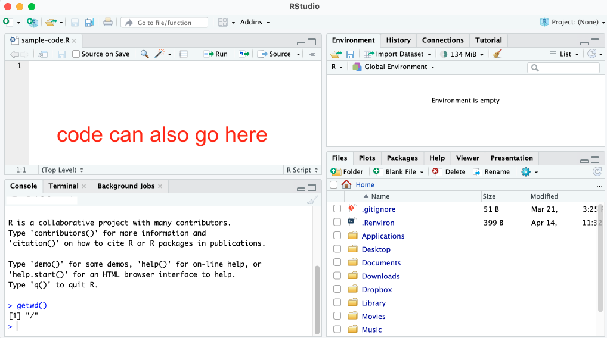

install.packages("tidyverse")Introduction to R & RStudio
Brunei R User Group Meetup üáßüá≥
https://bruneir.github.io/brm-intro-to-r
Preliminaries
Welcome to the 3rd Brunei R User Group meetup!
The RUGS mission is to facilitate the person-to-person exchange of knowledge in small group settings on a global scale. —R Consortium

"R" |>
rug("b", _, "unei")About us
- A group of UBD-ians and R enthusiasts
- We want to create a community of R users in Brunei
- Champion the Open Source cause
Past events
- Analyzing Spatial Data using R [Workshop]
- R>aya Meetup Sharing Sessions
Expectations
Today’s Plan
This is a hands-on, live-coding, lecture-style “workshop”. Expect to learn (or at the very least, see me do!)…
- What is R & RStudio? How can it ease the burden of repeated reporting?
- Basic functions for manipulating data
- Using R effectively
- More data manipulation
- Visualizing data
- A peek at advanced topics
Introduction to R & RStudio
When people consider switching to R, they usually think about it as a direct replacement for whatever tool they’re currently using. While R can indeed replace software like Excel, SPSS, or Stata, it offers much more!
Suppose a current workflow that looks like this,
- Data analysis in SPSS (or a similar tool)
- Data visualization in Excel
- Report writing in Word
Have you ever encountered an error in the first step and had to go back through all three steps to fix it? It’s quite frustrating, isn’t it?
R can get around this by combining data analysis, visualization, and reporting in one tool using RMarkdown. Any time you realize you’ve made a mistake, you just rerun your code and you get a new report. Think of the time it can save you!
Hence, R is a popular programming language, especially in certain fields such as data science, academic research, and statistics.
RStudio is an integrated development editor (IDE) for R. It is easier to write code using the editor.
Here are several reasons why you should use R:
- R is widely used among statisticians, especially academic statisticians.
- If there is a new statistical procedure developed somewhere in academia, chances are that the code for it will be made available in R. This distinguishes R from, say, Python.
- R is commonly used for statistical analyses in many disciplines.
- Other software, such as SPSS or SAS is also used and in some disciplines would be the primary choice for some discipline specific courses, but R is popular and its user base is growing.
- R is free.
- You can install it and all optional packages on your computer at no cost. This is a big difference between R and SAS, SPSS, MATLAB, and most other statistical software.
- R is has a vibrant and growing community.
- With the advent of the tidyverse and RStudio, R is a vibrant and growing community. We also have found the community to be extremely welcoming. The R ecosystem is one of its strengths.
In this workshop, we will dive into the fundamentals of R and RStudio.
Getting Started with R & RStudio
What we’ll learn
- Installing the R Language.
- Installing the RStudio.
- Exploring the RStudio Interface
- Packages & help() function
Follow the guidelines in Brunei R website - Under blog, “How to Install R and Rstudio”
Once installed, launch RStudio and this is probably what you’ll see.
Notice the default panes:
- Console (entire left)
- Environment/History (tabbed in upper right)
- Files/Plots/Packages/Help (tabbed in lower right)

Packages
Everything which is done in R is done by functions. Commonly used functions are grouped in packages. Installing different packages expand the functionality of R.
Packages are bundles of code that add new functions to R.
Base packages are installed with R but not loaded by default.
Contributed packages need to be downloaded, installed & loaded separately.
To install a package, say tidyverse, for the first time, type
To load the package, type the package name without quotation
library(tidyverse)Getting help
To access R’s built-in help facility to get information on any function simply use the help() function. For example, to open the help page for our friend the mean() function.
help("mean")or you can use the equivalent shortcut.
?meanAfter you run the code, the help page is displayed in the ‘Help’ tab in the Files pane (bottom right of RStudio).
 or you can always google it!
or you can always google it!
Basics of R Programming
What we’ll learn
- Data types in R
- Variables and assignment
- Basic arithmetic operations
- Working with vectors and basic vector operations
Important basics:
R is case sensitive i.e.
Ais not the same asaandanovais not the same asAnova.Anything that follows a # symbol is interpreted as a comment and ignored by R. Comments should be used liberally throughout your code for both your own information and also to help your collaborators
In general, R is fairly tolerant of extra spaces inserted into your code, in fact using spaces is actively encouraged. However, spaces should not be inserted into operators i.e. <- should not read < - (note the space).
Data types
- Logical
- Logical data take on the value of either TRUE or FALSE. There’s also another special type of logical called NA to represent missing values.
x <- TRUE
x[1] TRUEy <- FALSE
y[1] FALSEz <- NA
z[1] NA- Numeric
- Numeric data are real numbers that contain a decimal. The default numerical type are known as “double”, which are floating point values.
x <- 2.6
x[1] 2.6class(x)[1] "numeric"typeof(x)[1] "double"- Integers
- Integers are whole numbers (those numbers without a decimal point). It is represented by number and letter L: 1L, 2L, 3L.
x <- 1L
x[1] 1class(x)[1] "integer"- Character
- Character data are used to represent string values. You can think of character strings as something like a word (or multiple words).
x <- "Hello, World"
class(x)[1] "character" is.character(x)[1] TRUEA special type of character string is a Factor, which is a string but with additional attributes (like levels or an order). For example, Low, Medium and High which are denoted as factors where the computer record them as by 1, 2 and 3 respectively.
perf <- c("Low", "Medium", "High")
factor(perf)[1] Low Medium High
Levels: High Low MediumHere’s a summary table of some of the logical test and coercion functions available to you.
| Type | Logical test | Coercing |
|---|---|---|
| Logical | is.logical |
as.logical |
| Double | is.numeric |
as.numeric |
| Integer | is.integer |
as.integer |
| Character | is.character |
as.character |
| Factor | is.factor |
as.factor |
| Complex | is.complex |
as.complex |
Variables and Assignment
Variables in R are used to store data values. You can create a variable using the assignment operator <- or =.
first_name <- "Hafeezul"
height <- 175.5
first_name[1] "Hafeezul"height[1] 175.5last_name = "Raziq"
last_name[1] "Raziq"
Note
Best practice: Use <- for assignment to avoid confusion with the equality operator ==.
Basic Arithmetic Operations
R supports basic arithmetic operations, which are similar to those in other programming languages.
- Addition
5 + 2[1] 7- Subtraction
10 - 2[1] 8- Multiplication/Product
7 * 5[1] 35- Division/Quotient
20 / 4[1] 5- Exponential
10 ^ 2[1] 100- Modulus
- Returns the remainder of the division.
10 %% 2[1] 0Basic Vector Operations
Vectors can be combined using the concatenate c() function.
numbers <- c(1,2,3)
numbers[1] 1 2 3rbaf <- c("Land Force", "Navy", "Air Force")
rbaf[1] "Land Force" "Navy" "Air Force" numbers <- c(1:10, 15:20)
numbers [1] 1 2 3 4 5 6 7 8 9 10 15 16 17 18 19 20length(): Returns the number of elements in a vector.
length(rbaf)[1] 3length(numbers)[1] 16sum(): Returns the sum of all elements in a numeric vector.
sum(numbers)[1] 160mean(): Returns the average of the elements in a numeric vector.
mean(numbers)[1] 10Use square brackets [] to access elements by their index (starting from 1).
rbaf[2][1] "Navy"rbaf[-2][1] "Land Force" "Air Force" rbaf[1:2][1] "Land Force" "Navy" numbers[11][1] 1510-MINUTE BREAK
Data structures in R
What we’ll learn
- Introduction to matrices, arrays, data frames and list.
- Creating and manipulating data frames.
- Accessing elements in data structures.
R offers various data structures for storing and manipulating data. The most commonly used ones are vector, matrices, arrays, data frames and list.
- Matrix
- Matrix is a two-dimensional array. Alternatively, it is stacking multiple vectors of the same length.
To define a matrix from a vector, the syntax is matrix(vector, nrow, ncol, byrow). byrow is the way we fill the array. It is either TRUE or FALSE.
Size of matrix is rather complicated since it has two dimensions. There are three basics operations:
length(): total number of elementsncol(): total number of columnsnrow(): total number of rows
z <- matrix(1:6, ncol = 2, byrow = TRUE)
z [,1] [,2]
[1,] 1 2
[2,] 3 4
[3,] 5 6length(z)[1] 6ncol(z) # check number of columns[1] 2nrow(z) # check number of rows[1] 3The following code fills the matrix by column.
x <- matrix(1:20, nrow=5, ncol=4, byrow=FALSE)
x [,1] [,2] [,3] [,4]
[1,] 1 6 11 16
[2,] 2 7 12 17
[3,] 3 8 13 18
[4,] 4 9 14 19
[5,] 5 10 15 20Extracting elements from matrix is similar to extraction in vector.
x[2,] #the second row[1] 2 7 12 17x[,1] #the first column[1] 1 2 3 4 5x[1,2] #first row, second column[1] 6mat <- matrix(c(85, 90, 88, 75, 80, 78, 95, 85, 89), nrow = 3, ncol = 3, byrow = TRUE)
colnames(mat) <- c("Physical", "Shooting", "Strategy")
rownames(mat) <- c("Hasbul", "Khalid", "Fitri")
mat Physical Shooting Strategy
Hasbul 85 90 88
Khalid 75 80 78
Fitri 95 85 89- Array
Array behaves like matrix but it is multi-dimensional (more than 2). To define array from vector, the syntax is array(vector/input, c(nrow, ncol, nmatrix))
x<- array(1:12, c(2,3,2))
x, , 1
[,1] [,2] [,3]
[1,] 1 3 5
[2,] 2 4 6
, , 2
[,1] [,2] [,3]
[1,] 7 9 11
[2,] 8 10 12- Data frame
Data frame is most useful form of data type in R. It behaves like matrix but can contain vectors of different types. That is we can have vectors of characters and numeric together, which is not feasible under matrix or array.
To visualize a data frame, one may consider a spreadsheet: Each column is a vector and each spreadsheet is a data frame – it is a collection of columns of cells.
# RBAF Personnel Data
rbaf_df <- data.frame(
name = c("Hasbul", "Khalid", "Fitri"),
rank = c("Lieutenant", "Sergeant", "Captain"),
age = c(25, 30, 35)
)
rbaf_df name rank age
1 Hasbul Lieutenant 25
2 Khalid Sergeant 30
3 Fitri Captain 35```
Let’s add a column for years of service:
rbaf_df$service <- c(2, 10, 5) # adding a new column for years of service
rbaf_df name rank age service
1 Hasbul Lieutenant 25 2
2 Khalid Sergeant 30 10
3 Fitri Captain 35 5The $ operator is used to extract or subset a specific part of a data object in R.
rbaf_df$name[1] "Hasbul" "Khalid" "Fitri" Removing the ‘Rank’ column:
rbaf_df$rank <- NULL
rbaf_df name age service
1 Hasbul 25 2
2 Khalid 30 10
3 Fitri 35 5Use rbind() to add rows, such as:
new_row <- data.frame(name = "Hafeezul", age = 28, service = 1)
rbaf_df <- rbind(rbaf_df, new_row)
rbaf_df name age service
1 Hasbul 25 2
2 Khalid 30 10
3 Fitri 35 5
4 Hafeezul 28 1Remove rows by sub-setting:
rbaf_df <- rbaf_df[-2, ] # Removes the second rowOperators, Functions and Control Structures
What we’ll learn
- Introduction to logical and comparison operators
- Introduction to functions
- Introduction to control structures (if-else statements, loops).
- Example applications of control structures and loops.
Logical Operators
| Operator | Operation | Vectorized? |
|---|---|---|
x|y |
or | Yes |
x & y |
and | Yes |
!x |
not | Yes |
x || y |
or | No |
x && y |
and | No |
xor(x,y) |
exclusive or | Yes |
Comparison Operators
| Operator | Comparison | Vectorized? |
|---|---|---|
x<y |
less than | Yes |
x>y |
greater than | Yes |
x <= y |
less than or equals to | Yes |
x >= y |
greater than or equals to | Yes |
x != y |
not equals to | Yes |
x == y |
equals to | Yes |
x %in% y |
contains | Yes |
Functions
Functions are defined by two components: the arguments (formals) and the code (body).
You can create your own functions using the function keyword.
square <- function(x) {
return(x^2)
}
square(4)[1] 16Control structures
Control structures are used to manage the flow of execution in R scripts.
if-elseStatements
- Conditional execution based on a logical test
Here is a common example for if-else statement.
x <- 3
if(x < 0){
"x is negative"
} else if (x > 0) {
"x is positive"
} else {
"x is zero"
}[1] "x is positive"Another example, determining if a soldier is eligible for a promotion based on years of service.
service <- 6
if (service > 5) {
"Eligible"
} else {
"Not Eligible"
}[1] "Eligible"forLoops
Simplest, and most common type of loop in R–given a vector iterate through the elements and evaluate the code block for each.
is_even <- function(x) {
res <- c()
for(val in x) {
res <- c(res, val %% 2 == 0)
}
res
}
is_even(1:10) [1] FALSE TRUE FALSE TRUE FALSE TRUE FALSE TRUE FALSE TRUEis_even(seq(1, 5, 2))[1] FALSE FALSE FALSEwhileloops
Repeat until the given condition is not met (i.e. evaluates to FALSE)
make_seq <- function(from = 1, to = 1, by = 1) {
res <- c(from)
cur <- from
while(cur + by <= to) {
cur = cur + by
res = c(res, cur)
}
res
}
make_seq(1, 6)[1] 1 2 3 4 5 6make_seq(1, 6, 2)[1] 1 3 5Exercise:
Write a set of conditional(s) that satisfies the following requirements,
- If
xis greater than3andyis less than or equal to3then print “Hello world!” - Otherwise if
xis greater than3print “!dlrow olleH” - If is
xis less than or equal to3then print “Something else…” - Stop execution if
xis odd andyis even and report an error, don’t print any of the text strings above.
Test out your code by trying various values of x and y.
10-MINUTE BREAK
Data Import and Export
What we’ll learn
- Importing data from various file formats (CSV, Excel, etc.) into R.
- Exporting data from R to different file formats
R provides various functions for importing data from different file formats, making it easy to work with external data sources.
Importing CSV files
The read.csv() function is used to read CSV files.
titanic <- read.csv("~/Documents/github_local/brm-intro-to-r/data/titanic.csv")Importing Excel files
The readxl package provides functions to read Excel files. Install the package (if not already installed) and load it.
install.packages("readxl")
library(readxl)
titanic <- read_excel("~/Documents/github_local/brm-intro-to-r/data/titanic.xlsx")head(titanic) # Display the first few rows of the data PassengerId Survived Pclass
1 1 0 3
2 2 1 1
3 3 1 3
4 4 1 1
5 5 0 3
6 6 0 3
Name Sex Age SibSp Parch
1 Braund, Mr. Owen Harris male 22 1 0
2 Cumings, Mrs. John Bradley (Florence Briggs Thayer) female 38 1 0
3 Heikkinen, Miss. Laina female 26 0 0
4 Futrelle, Mrs. Jacques Heath (Lily May Peel) female 35 1 0
5 Allen, Mr. William Henry male 35 0 0
6 Moran, Mr. James male NA 0 0
Ticket Fare Cabin Embarked
1 A/5 21171 7.2500 S
2 PC 17599 71.2833 C85 C
3 STON/O2. 3101282 7.9250 S
4 113803 53.1000 C123 S
5 373450 8.0500 S
6 330877 8.4583 QData Visualization
What we’ll learn
- Creating basic plots (scatter plots, bar plots, histograms, etc.).
R provides powerful tools for data visualization, allowing you to create various types of plots to explore and present your data. Using the Titanic data set, we can create several common types of plots.
- Scatter Plots:
Scatter plots are useful for visualizing the relationship between two variables. Lets plot the relationship between age and fare in the Titanic data set.
plot(titanic$Age, titanic$Fare,
main="Age vs. Fare",
xlab="Age", ylab="Fare", pch=19)- Bar Plots
Bar plots are useful for comparing. We will visualize the count of passengers in each class.
barplot(table(
titanic$Pclass),
main="Count of Passengers by Class",
xlab="Passenger Class", ylab="Count", col="blue")
- Histograms
Histograms are useful for visualizing the distribution of a single numeric variable. Lets plot the the distribution of ages in the Titanic data set.
hist(titanic$Age,
main="Distribution of Ages on the Titanic",
xlab="Age", col="green", breaks=10)4 Box Plots - Box plots are useful for visualizing the distribution and identifying outliers. Lets visualize the distribution of fares by passenger class.
boxplot(Fare ~ Pclass, data=titanic ,
main="Fares by Passenger Class",
xlab="Passenger Class", ylab="Fare", col="orange")References
R for the Rest of Us: https://book.rfortherestofus.com/
Techincal Analysis with R (second edition): https://bookdown.org/kochiuyu/technical-analysis-with-r-second-edition2/
Probability, Statistics, and Data: A fresh approach using R: https://mathstat.slu.edu/~speegle/_book/
An Introduction to R: https://intro2r.com/